在创建项目时添加以下依赖项：
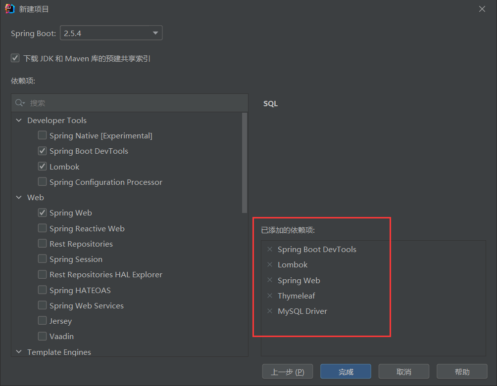
1 2 3 4 5 6 7 8 9 10 <dependency > <groupId > org.apache.shiro</groupId > <artifactId > shiro-spring</artifactId > <version > 1.7.1</version > </dependency > <dependency > <groupId > com.baomidou</groupId > <artifactId > mybatis-plus-boot-starter</artifactId > <version > 3.4.3.1</version > </dependency >
项目中用到的具体数据数据如下图所示，为了减少项目复杂性，把用户、角色、权限全部整合到了user表上：
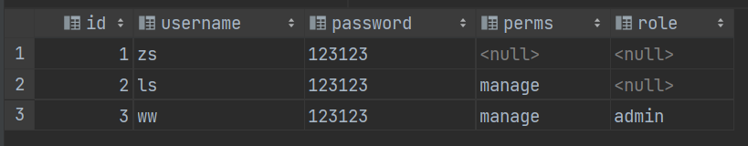
生成该表的user.sql文件内容
1 2 3 4 5 6 7 8 9 10 11 12 13 14 15 16 17 18 19 20 21 22 23 24 25 26 27 28 29 30 31 32 33 34 35 36 37 38 39 40 41 42 43 44 45 46 47 48 49 50 51 52 53 ; ; ; ; ; ; ; ; ; ; DROP TABLE IF EXISTS `user `;; ; CREATE TABLE `user ` ( `id` int (11 ) DEFAULT NULL , `username` varchar (40 ) DEFAULT NULL , `password` varchar (40 ) DEFAULT NULL , `perms` varchar (20 ) DEFAULT NULL , `role` varchar (255 ) DEFAULT NULL ) ENGINE= InnoDB DEFAULT CHARSET= utf8mb4 COLLATE = utf8mb4_0900_ai_ci; ; LOCK TABLES `user ` WRITE; ; INSERT INTO `user ` (`id`, `username`, `password`, `perms`, `role`) VALUES (1 ,'zs' ,'123123' ,NULL ,NULL ),(2 ,'ls' ,'123123' ,'manage' ,NULL ),(3 ,'ww' ,'123123' ,'manage' ,'admin' );; UNLOCK TABLES; ; ; ; ; ; ; ; ;
项目结构如下图所示，可按需求自行调整
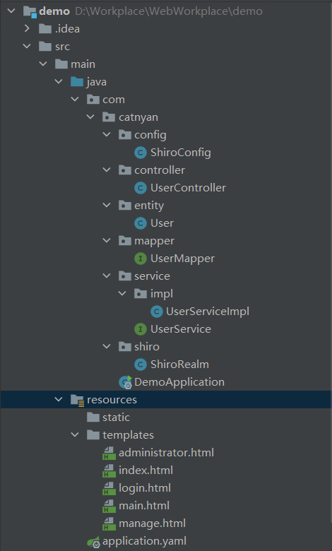
1 2 3 4 5 6 7 8 9 10 import lombok.Data;@Data public class User private Integer id; private String username; private String password; private String perms; private String role; }
1 2 3 4 5 import com.baomidou.mybatisplus.core.mapper.BaseMapper;import com.catnyan.entity.User;public interface UserMapper extends BaseMapper <User >}
UserService接口
1 2 3 4 5 import com.catnyan.entity.User;public interface UserService public User findByUsername (String username) }
UserServiceImpl类（实现了UserService接口）
1 2 3 4 5 6 7 8 9 10 11 12 13 14 import javax.annotation.Resource;@Service public class UserServiceImpl implements UserService @Resource private UserMapper userMapper; @Override public User findByUsername (String username) QueryWrapper<User> wrapper = new QueryWrapper<>(); wrapper.eq("username" , username); return userMapper.selectOne(wrapper); } }
在resources文件中创建application.yaml文件，并添加如下配置：
1 2 3 4 5 6 7 8 9 10 11 12 spring: datasource: driver-class-name: com.mysql.cj.jdbc.Driver url: jdbc:mysql://localhost:3306/mybatis?useUnicode=true&useSSL=false&characterEncoding=utf8&serverTimezone=GMT%2B8 username: root password: 123456 mybatis-plus: configuration: log-impl: org.apache.ibatis.logging.stdout.StdOutImpl
请在测试类中检测mapper接口及service接口是否正常工作，测试类代码：
1 2 3 4 5 6 7 8 9 10 11 12 13 14 15 16 17 18 19 20 21 22 23 24 25 26 27 28 29 30 import com.catnyan.entity.User;import com.catnyan.mapper.UserMapper;import com.catnyan.service.UserService;import org.junit.jupiter.api.Test;import org.springframework.boot.test.context.SpringBootTest;import javax.annotation.Resource;import java.util.List;@SpringBootTest class DemoApplicationTests @Resource private UserMapper userMapper; @Resource private UserService userService; @Test void mapper () List<User> users = userMapper.selectList(null ); users.forEach(System.out::println); } @Test void service () User user = userService.findByUsername("zs" ); System.out.println(user); } }
UserMapper接口预期结果
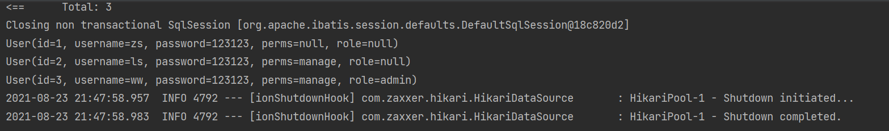
UserService接口预期结果
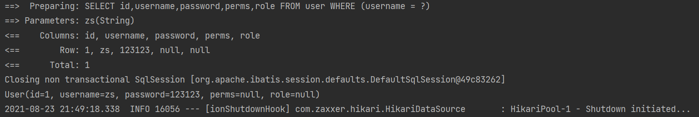
如果以上预取结果全部实现，则可继续剩余流程，否则请检查代码是否正确
1 2 3 4 5 6 7 8 9 10 11 12 13 14 15 16 17 18 19 20 21 22 23 24 25 26 27 28 29 30 31 32 33 34 35 36 37 38 39 40 41 42 43 44 45 46 47 48 import com.catnyan.entity.User;import com.catnyan.service.UserService;import org.apache.shiro.SecurityUtils;import org.apache.shiro.authc.*;import org.apache.shiro.authz.AuthorizationInfo;import org.apache.shiro.authz.SimpleAuthorizationInfo;import org.apache.shiro.realm.AuthorizingRealm;import org.apache.shiro.subject.PrincipalCollection;import org.apache.shiro.subject.Subject;import org.springframework.stereotype.Component;import javax.annotation.Resource;import java.util.HashSet;import java.util.Set;@Component public class ShiroRealm extends AuthorizingRealm @Resource private UserService userService; @Override protected AuthorizationInfo doGetAuthorizationInfo (PrincipalCollection principals) Subject subject = SecurityUtils.getSubject(); User user = (User) subject.getPrincipal(); Set<String> roles = new HashSet<>(); roles.add(user.getRole()); SimpleAuthorizationInfo info = new SimpleAuthorizationInfo(roles); info.addStringPermission(user.getPerms()); return info; } @Override protected AuthenticationInfo doGetAuthenticationInfo (AuthenticationToken authenticationToken) throws AuthenticationException UsernamePasswordToken token = (UsernamePasswordToken) authenticationToken; User user = userService.findByUsername(token.getUsername()); if (user != null ) { return new SimpleAuthenticationInfo(user,user.getPassword(),getName()); } return null ; } }
认证过滤器
anon ：无需认证
authc ：必须认证
user ：不一定通过认证，只要曾经被 Shiro 记录即可，比如：记住我
授权过滤器
perms ：必须拥有某个权限才能访问
role ：必须拥有某个角色才能访问
port ：请求的端口必须是指定值才可以
rest ：rest 风格拦截器，自动根据请求方法构建权限字符串
ssl ：必须是安全的 URL 请求，协议 HTTPS
1 2 3 4 5 6 7 8 9 10 11 12 13 14 15 16 17 18 19 20 21 22 23 24 25 26 27 28 29 30 31 32 33 34 35 36 import com.catnyan.shiro.ShiroRealm;import org.apache.shiro.spring.web.ShiroFilterFactoryBean;import org.apache.shiro.web.mgt.DefaultWebSecurityManager;import org.springframework.context.annotation.Bean;import org.springframework.context.annotation.Configuration;import java.util.LinkedHashMap;@Configuration public class ShiroConfig @Bean public ShiroFilterFactoryBean shiroFilterFactoryBean (DefaultWebSecurityManager securityManager) ShiroFilterFactoryBean factoryBean = new ShiroFilterFactoryBean(); factoryBean.setSecurityManager(securityManager); LinkedHashMap<String, String> filterMap = new LinkedHashMap<>(); filterMap.put("/main" ,"authc" ); filterMap.put("/manage" , "perms[manage]" ); filterMap.put("/administrator" , "roles[admin]" ); factoryBean.setFilterChainDefinitionMap(filterMap); factoryBean.setLoginUrl("/login" ); factoryBean.setUnauthorizedUrl("/unauthc" ); return factoryBean; } @Bean public DefaultWebSecurityManager defaultWebSecurityManager (ShiroRealm shiroRealm) DefaultWebSecurityManager securityManager = new DefaultWebSecurityManager(); securityManager.setRealm(shiroRealm); return securityManager; } }
index.html
1 2 3 4 5 6 7 8 9 10 11 12 13 14 15 16 17 <!DOCTYPE html > <html lang ="en" xmlns:th ="http://www.thymeleaf.org" > <head > <meta charset ="UTF-8" > <title > Title</title > </head > <body > <h1 > index</h1 > <div th:if ="${session.user != null}" > <span th:text ="${session.user.username}+'欢迎回来'" > </span > <a href ="/logout" > 退出</a > </div > <a href ="/main" > main</a > | <a href ="/manage" > manage</a > | <a href ="/administrator" > administrator</a > </body > </html >
login.html
1 2 3 4 5 6 7 8 9 10 11 12 13 14 15 16 17 18 <!DOCTYPE html > <html lang ="en" xmlns:th ="http://www.thymeleaf.org" > <head > <meta charset ="UTF-8" > <title > Title</title > </head > <body > <h1 > Login</h1 > <form action ="/login" method ="post" > 用户名：<input type ="text" name ="username" > <br > 密码：<input type ="password" name ="password" > <br > <span th:text ="${msg}" style ="color: red" > </span > <br > <input type ="submit" value ="登录" > </form > </body > </html >
main.html
1 2 3 4 5 6 7 8 9 10 11 12 <!DOCTYPE html > <html lang ="en" > <head > <meta charset ="UTF-8" > <title > Title</title > </head > <body > <h1 > 首页</h1 > </body > </html >
manage.html
1 2 3 4 5 6 7 8 9 10 11 12 <!DOCTYPE html > <html lang ="en" > <head > <meta charset ="UTF-8" > <title > Title</title > </head > <body > <h1 > manage</h1 > </body > </html >
administrator.html
1 2 3 4 5 6 7 8 9 10 11 12 <!DOCTYPE html > <html lang ="en" > <head > <meta charset ="UTF-8" > <title > Title</title > </head > <body > <h1 > administrator</h1 > </body > </html >
1 2 3 4 5 6 7 8 9 10 11 12 13 14 15 16 17 18 19 20 21 22 23 24 25 26 27 28 29 30 31 32 33 34 35 36 37 38 39 40 41 42 43 44 45 46 47 48 49 50 51 52 53 54 55 56 57 import com.catnyan.entity.User;import org.apache.shiro.SecurityUtils;import org.apache.shiro.authc.IncorrectCredentialsException;import org.apache.shiro.authc.UnknownAccountException;import org.apache.shiro.authc.UsernamePasswordToken;import org.apache.shiro.subject.Subject;import org.springframework.stereotype.Controller;import org.springframework.ui.Model;import org.springframework.web.bind.annotation.GetMapping;import org.springframework.web.bind.annotation.PathVariable;import org.springframework.web.bind.annotation.PostMapping;import org.springframework.web.bind.annotation.ResponseBody;@Controller public class UserController @GetMapping("/{url}") public String redirect (@PathVariable("url") String url) return url; } @PostMapping("/login") public String login (String username, String password, Model model) Subject subject = SecurityUtils.getSubject(); UsernamePasswordToken token = new UsernamePasswordToken(username, password); try { subject.login(token); User user = (User) subject.getPrincipal(); subject.getSession().setAttribute("user" , user); return "/index" ; } catch (UnknownAccountException e) { e.printStackTrace(); model.addAttribute("msg" , "用户不存在！" ); } catch (IncorrectCredentialsException e) { e.printStackTrace(); model.addAttribute("msg" , "密码错误！" ); } return null ; } @GetMapping("/unauthc") @ResponseBody public String unauthc () return "未授权，无法访问" ; } @GetMapping("/logout") public String logout () Subject subject = SecurityUtils.getSubject(); subject.logout(); return "/login" ; } }
上述准备工作全部完成后，就可以开始测试Shiro 是否能正常工作了。
启动项目
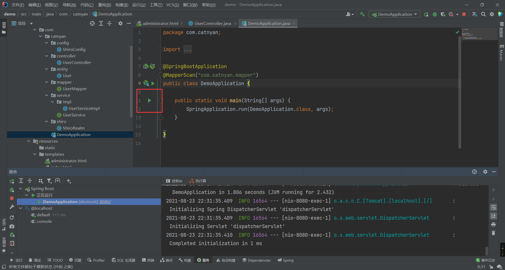
进入主界面
当项目启动成功后，在浏览器中输入localhost:8080,进入主界面如下图所示
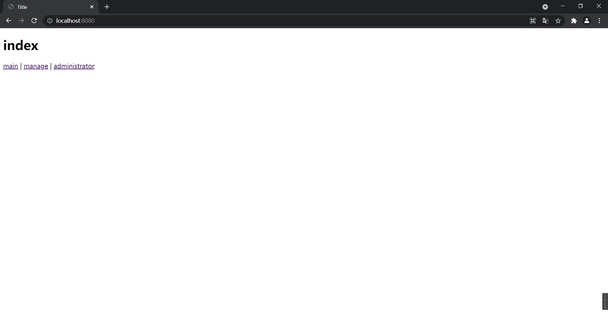
未登录状态
此时你处于未登录状态，点击任意一个连接，都会被重定向到login页面，用户名或密码错误都会抛出异常并将提示信息展示到页面上，只有登录成功后才具有访问某些页面的权限，
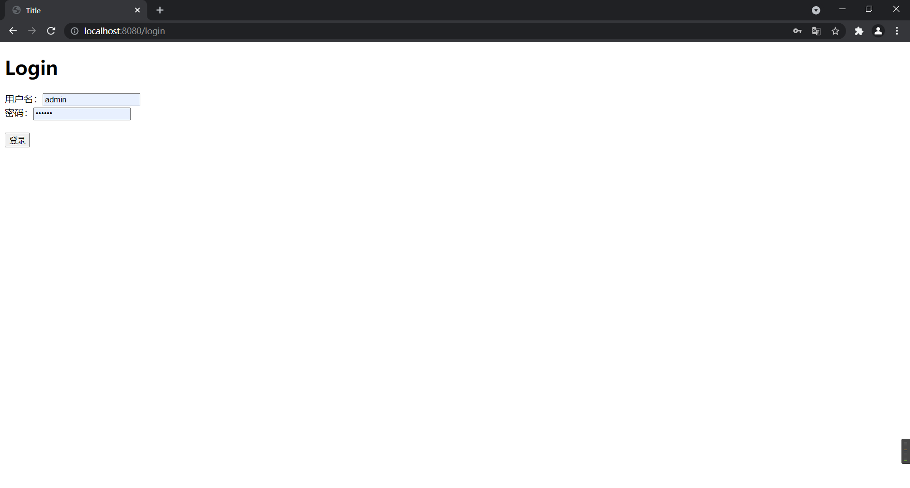
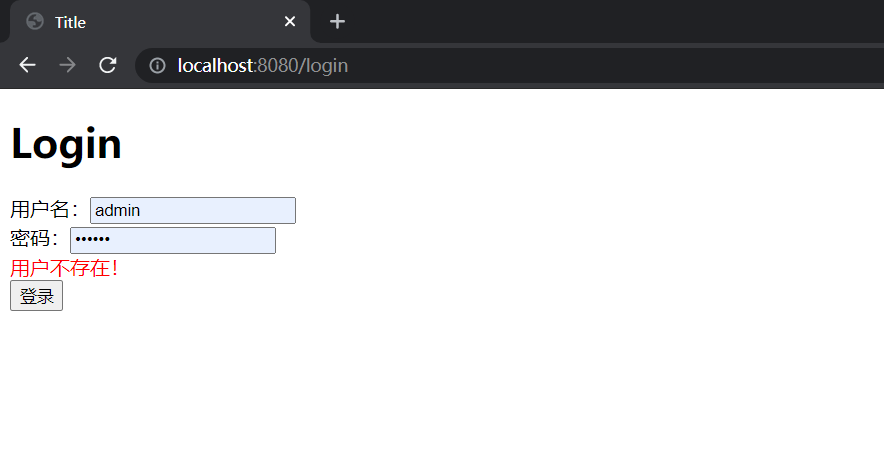
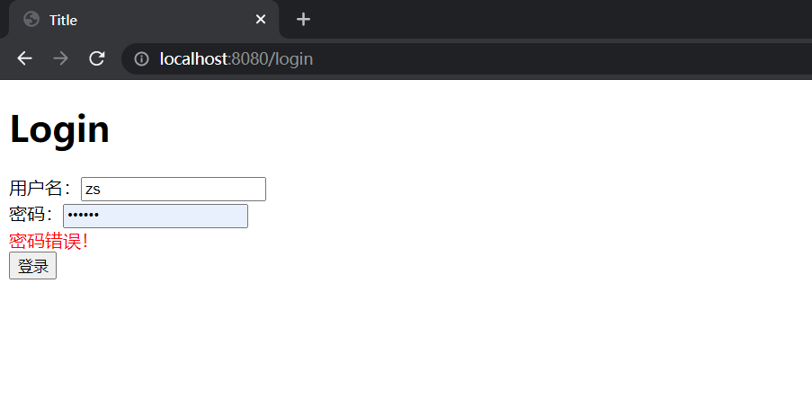
登录状态
登录成功后将会返回至index页面，并且登录的用户信息也会显示出来
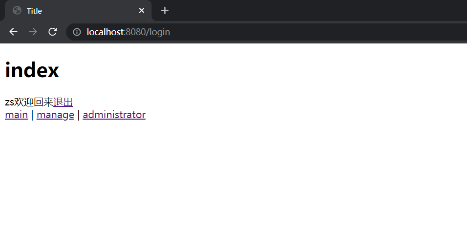
此时用户只具有一部分访问权限，如用户”zs “只能访问main页面，访问其他页面时将会出现提示”未授权，无法访问“
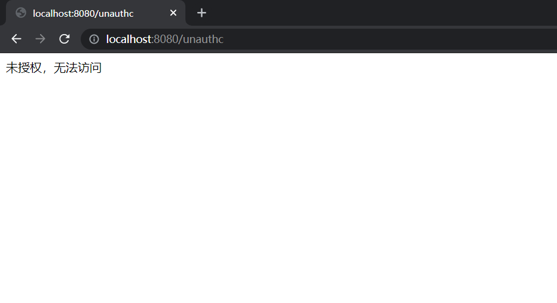
退出登录
在index页面可以点击“退出”来注销当前用户，此时关于该用户的session信息、认证信息、权限信息都将会移除，之后会重定向至login页面
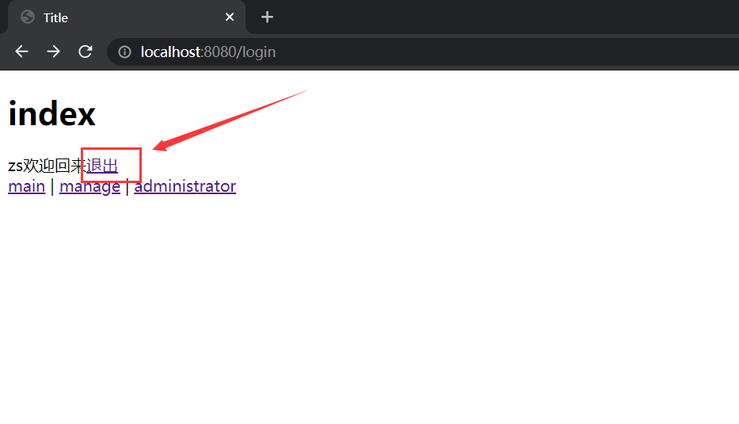
至此关于SpringBoot整合Shiro的简易整合已经全部完成，除了用户“zs”，你也可登录其他用户如“ls”、”ww”等，他们分别具有不同的权限，因此可访问的页面也各不相同，具体效果请自行测试。